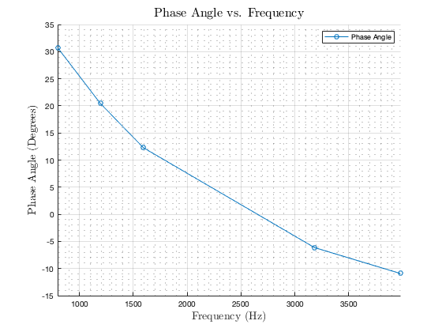

Contents
clear; close all; clc
Given Values
frequencies = {[796 1193 1592 3183 3979], 'Hz'};
R = {1, 'kOhm'};
C = {.1, 'uF'};
Impedance Conversions
w = {frequencies{1} .* 2 .* pi, 'rad/s'};
Zc = -1i ./ (w{1} * (C{1} * 10^-6));
Vi = @(t) sin(w * t);
ViComplex = (sqrt(2) ./ 2 ) * exp(1i);
Nodal Equations
Vn1 = ViComplex;
syms Vn2
nodalEq = ((Vn2 - Vn1) ./ (R{1} * 1000)) + ...
(Vn2 ./ Zc) ==0;
voltageNode2 = zeros(1, length(Zc));
for ii = 1:length(Zc)
voltageNode2(ii) = double(solve(nodalEq(ii), Vn2));
end
current = zeros(1, length(Zc));
for ii = 1:length(Zc)
current(ii) = (Vn1 - voltageNode2(ii)) ./ (R{1} * 1000);
end
Complex Capacitor Voltages
Vc = zeros(1, length(current));
for ii = 1:length(current)
Vc(ii) = Zc(ii) * current(ii);
end
Plots
figure(1)
hold on
grid on
grid minor
yVals = 20 * log(abs(Vc) ./ abs(ViComplex));
plot(frequencies{1}, yVals, 'o-');
xlabel('{Frequency (Hz)}', 'fontsize', 14, 'Interpreter', 'latex');
ylabel('20log($\mid$Vc$\mid$/$\mid$Vi$\mid$)', 'fontsize', 14, ...
'Interpreter', 'latex');
title('{Decibels vs. Frequency}', ...
'fontsize', 16, 'Interpreter', 'latex');
legend('Decibel Reading', 'location','northeast');
xlim([min(frequencies{1}) max(frequencies{1})]);
figure(2)
hold on
grid on
grid minor
phaseAngles = angle(Vc) * (180 ./ pi);
plot(frequencies{1}, phaseAngles, 'o-');
xlabel('{Frequency (Hz)}', 'fontsize', 14, 'Interpreter', 'latex');
ylabel('Phase Angle (Degrees)', 'fontsize', 14, ...
'Interpreter', 'latex');
title('{Phase Angle vs. Frequency}', ...
'fontsize', 16, 'Interpreter', 'latex');
legend('Phase Angle', 'location','northeast');
xlim([min(frequencies{1}) max(frequencies{1})]);

Displaying Results
for ii = 1: length(Vc)
fprintf('Complex Capacitor voltage for w%d = %e + %ej %s \n', ii, ...
real(Vc(ii)), imag(Vc(ii)), 'V');
end
Complex Capacitor voltage for w1 = 5.436509e-01 + 3.231074e-01j V
Complex Capacitor voltage for w2 = 5.301709e-01 + 1.976022e-01j V
Complex Capacitor voltage for w3 = 4.884765e-01 + 1.063950e-01j V
Complex Capacitor voltage for w4 = 3.144225e-01 + -3.381554e-02j V
Complex Capacitor voltage for w5 = 2.578649e-01 + -4.967301e-02j V
Magnitude and Phase Angle of Complex Currents & Voltages for Inductor
magnitudeCurrent = abs(current);
magnitudeVoltage = abs(Vc);
angleCurrent = angle(current) * (180 ./ pi);
angleVoltage = angle(Vc) * (180 ./ pi);